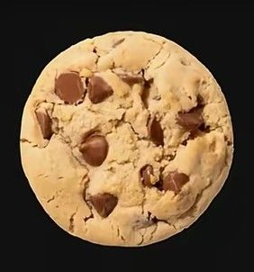

Les Cookie, comment faire ?
Liste des aliment
-Beurre tendre,
-Sucre,
-Chocolat noir,
-Farine,
-Très peu de sel,
-Levure très chimique,
-Oeufs,
-Sucre vanillé/ arome de vanille.
+ tous ce que vous voulez rajouter.
Recette
Étape 1
Détailler le chocolat en pépites.
Étape 2
Préchauffer le four à 180°C (thermostat 6). Dans un saladier, mettre 75 g de beurre, le sucre, l'oeuf entier, la vanille et mélanger le tout avec une cuillère en bois.
Étape 3
Ajouter petit à petit la farine mélangée à la levure, le sel et le chocolat.
Étape 4
Avec une feuille de papier essuie-tout, beurrer une plaque allant au four et former les cookies sur la plaque.
Étape 5
Pour former les cookies, utiliser 2 cuillères à soupe et faire des petits tas espacés les uns des autres; ils grandiront à la cuisson.
Étape 6
Enfourner pour 10 minutes de cuisson.

astuce pour COOKIES
☺☻☺☻☺☻☺☻☺
Nous contacter
autre truc